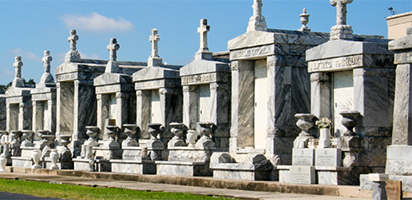
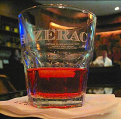
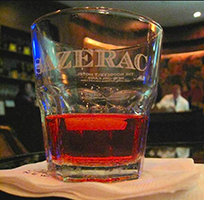
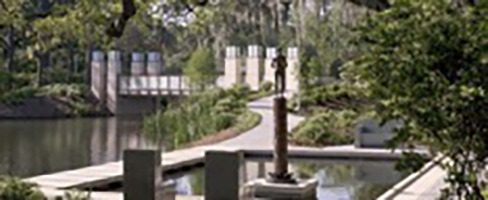

Local Information for Visitors
From the Hyatt, you can move Northeast (or as we would say in NO, "along the river"), to follow the suggestions below in order.
Things that are within short walking-distance to the Hyatt
Champions Square & Lafayette Square: Usually has live music
Restaurants: Willa Jean, Maypop, Juan's Flying Burrito, Carmo
** There are tons of restaurants everywhere, but the ones listed here are the best!

Things that are a longer walk or short Uber ride
Restaurants: Peche, Emerils
Museums: Ogden, National WW2 Museum, Audubon Aquarium (and IMAX), Audubon Butterfly Garden & Insectarium
Woldenberg Park: Live music or festivals


Longer walk (~25 min) or Uber ride away
Saint Louis Cemetery #2 (some musicians, war heroes, politicians, soldiers are buried here)
Armstrong Park & Congo Square: Music and festivals
Saenger Theatre: Music tours, Broadway
The Roosevelt: Inside this hotel is The Sazerac Bar, where the Sazerac cocktail was invented. An absolute must try.

 

Now we're entering the French Quarter (FQ)!


Jackson Square (left pic): The St. Louis Cathedral has beautiful stained glass. There's a Mardi Gras & Katrina museum. A bunch of other smaller historical museums around. All around the square are artists, musicians, and street performers.
French Market: Lots of shop stalls to buy all kinds of trinkets. Some of the owners will haggle the price down, especially if you can convince them you're a local.
Preservation Hall: Jazz music (believe it's family-friendly)
Restaurants: All of the restaurants are great, but they're designed for tourists. So they're more expensive and not always as good as the food you'd find elsewhere in the city. But it's all still delicious.
The Cafe Du Monde in the Quarter is the tourist thing to do, but the line is hours long sometimes. We recommend trying a Morning Call or CDM in other areas of the city if you don't want to wait in line.
Lafitte's Blacksmith Shop Bar: Famous bar built in the 1700s. It's haunted!


Then we hit Frenchmen Street (below right). Tourists always go to Bourbon Street but this used to be NO’s best kept secret. Grab a bunch of friends and about $50 in cash and walk up and down Frenchmen at night. There's tons of great bars with live music: d.b.a., Spotted Cat, Blue Nile, Cafe Negril, Maison, Snug Harbor. The cash is in case you need to pay a cover to go in. But weekday early shows are usually free. Weekend night covers are usually $10 for the first show, $20 for the second show. Most people pay the first cover and stay in until the second show starts.

Social event options
- Steamboat with Jazz band: http://www.steamboatnatchez.com/
- Riverboat http://www.bigeasy.com/creolequeen
Places for other informal socializing
- Dancing
- Dixieland jazz bands
- Zydeco Music blue grass (caller-type dancing)
There's tons of zydeco and brass bands; easier to see brass bands on Frenchmen. Zydeco isn't as popular in NO, so there's fewer options. - Cajun dancing spots: http://www.neworleansonline.com/neworleans/music/cajundancing.html
Rock 'N Bowl is fun, Mulate's is on the list, and the Maison is on Frenchmen.
- Music
- BB King’s Blues Club: http://bbkings.com/new-orleans/
- Rosy’s Jazz Hall: http://www.rosysjazzhall.com/
- Breweries
- Jax Brewery
- Brewery tour: http://nolabrewing.com/events/
- Crawfish boil
- Latrobe Old Building
- Sugar Mill
NOLA visitors page (with pictures!): https://www.neworleans.com/plan/
Categories
- Restaurants
- Seafood
- Datdog places
- Poboys places
- Gumbo places
- Bars
- Museums
- A Bloody Mary Haunted Museum & Tour Company
- Civil War Museum
- New Orleans Museum of Arts (NOMA)
- New Orleans Historic Voodoo Museum


- Movie houses
- Dinner theaters
- Walking
- Riverside/Lakeside
- Parks
- Left to right: Audubon park, zoo, and insectarium, city park

- Washington Square Park
- Sydney and Walda Besthoff Sculpture Garden

- Left to right: Audubon park, zoo, and insectarium, city park